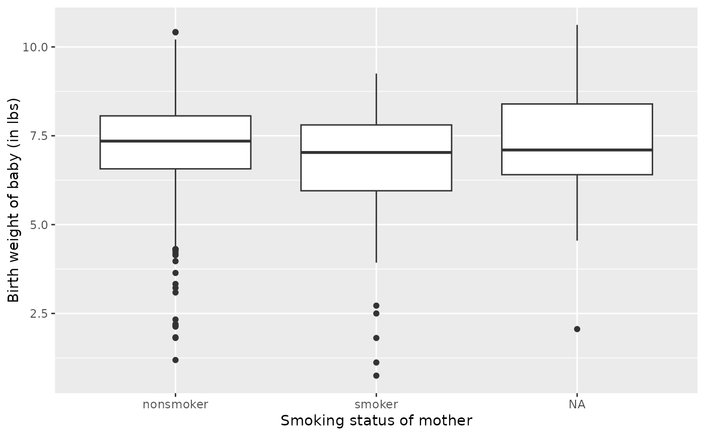
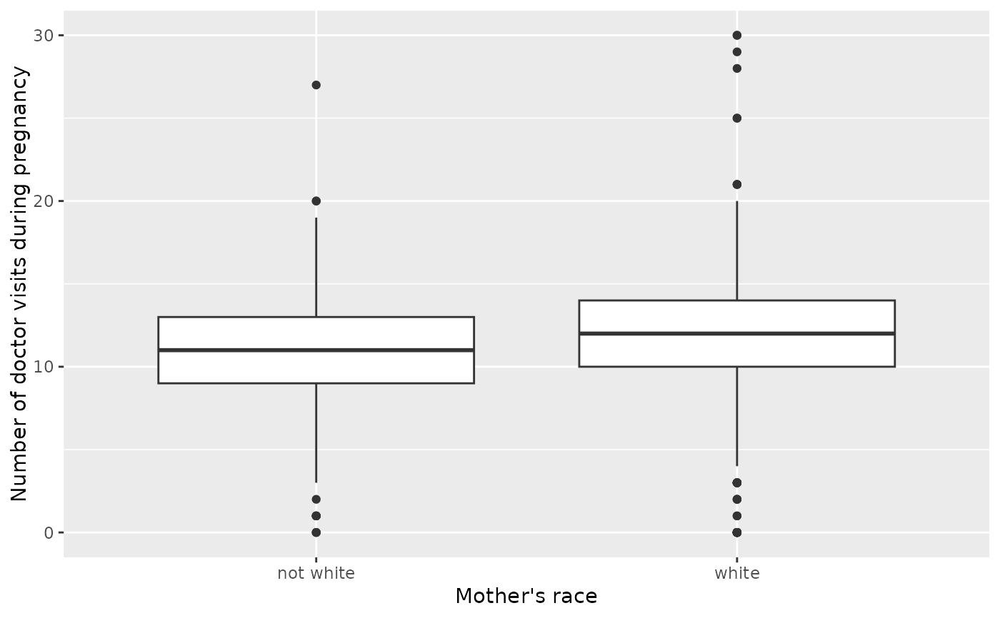
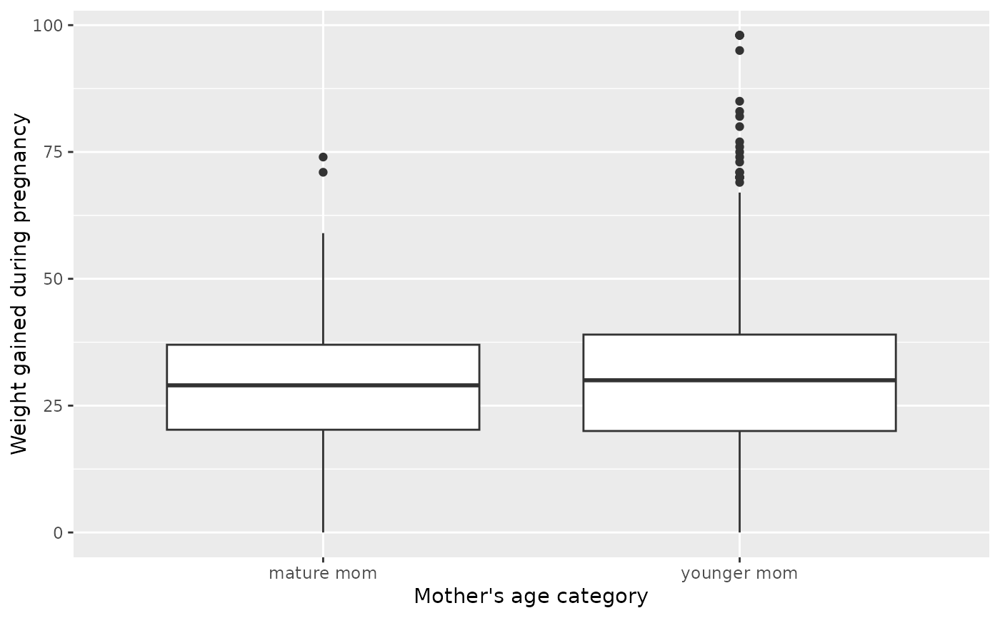

Every year, the US releases to the public a large dataset containing information on births recorded in the country. This dataset has been of interest to medical researchers who are studying the relation between habits and practices of expectant mothers and the birth of their children. This is a random sample of 1,000 cases from the dataset released in 2014.
Format
A data frame with 1,000 observations on the following 13 variables.
- fage
Father's age in years.
- mage
Mother's age in years.
- mature
Maturity status of mother.
- weeks
Length of pregnancy in weeks.
- premie
Whether the birth was classified as premature (premie) or full-term.
- visits
Number of hospital visits during pregnancy.
- gained
Weight gained by mother during pregnancy in pounds.
- weight
Weight of the baby at birth in pounds.
- lowbirthweight
Whether baby was classified as low birthweight (
low) or not (not low).- sex
Sex of the baby,
femaleormale.- habit
Status of the mother as a
nonsmokeror asmoker.- marital
Whether mother is
marriedornot marriedat birth.- whitemom
Whether mom is
whiteornot white.
Source
United States Department of Health and Human Services. Centers for Disease Control and Prevention. National Center for Health Statistics. Natality Detail File, 2014 United States. Inter-university Consortium for Political and Social Research, 2016-10-07. doi:10.3886/ICPSR36461.v1 .
Examples
library(ggplot2)
ggplot(births14, aes(x = habit, y = weight)) +
geom_boxplot() +
labs(x = "Smoking status of mother", y = "Birth weight of baby (in lbs)")

ggplot(births14, aes(x = whitemom, y = visits)) +
geom_boxplot() +
labs(x = "Mother's race", y = "Number of doctor visits during pregnancy")
#> Warning: Removed 56 rows containing non-finite outside the scale range
#> (`stat_boxplot()`).

ggplot(births14, aes(x = mature, y = gained)) +
geom_boxplot() +
labs(x = "Mother's age category", y = "Weight gained during pregnancy")
#> Warning: Removed 42 rows containing non-finite outside the scale range
#> (`stat_boxplot()`).
